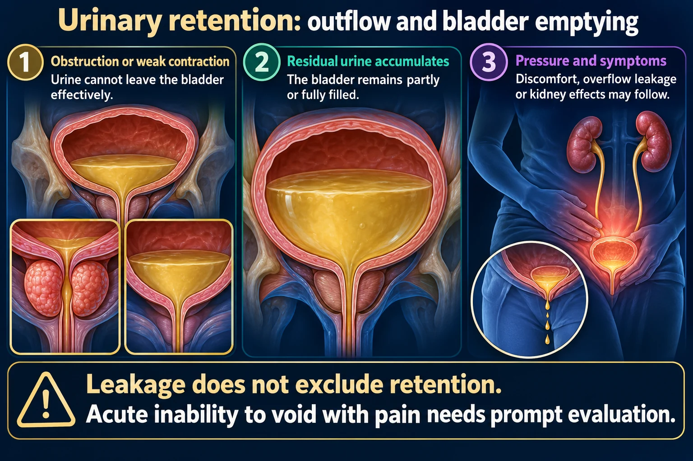

Benign Prostatic Hyperplasia · PSA · TURP & continuous bladder irrigation
Part 2 is the surgical half. A prostate that keeps growing eventually stops responding to pills — then it's TURP 🔪, a 3-way Foley 🚿, and a set of rules about urine color and irrigation that the NCLEX asks over and over: output must always be MORE than input.
📄 Simple Nursing original — opens in Drive →
Age plus hormones make a walnut into a lemon — and the urethra is running straight through the middle of it.
The prostate is a walnut-sized gland that sits directly below the bladder and completely encircles the urethra. Its normal job is making fluid for semen. Starting around age 40–50, hormone changes (mainly DHT) make the cells multiply — hyperplasia.
Because the gland is a ring around the pipe, growth goes INWARD and closes the pipe. That single fact explains every symptom, every drug and every surgery on this page.

Leakage does not exclude retention. Acute inability to void with pain needs prompt evaluation.
Obstruction or weak contraction
Urine cannot leave the bladder effectively.
Residual urine accumulates
The bladder remains partly or fully filled.
Pressure and symptoms
Discomfort, overflow leakage or kidney effects may follow.
Assess
Voiding history, discomfort, output and prescribed bladder scanning.
BPH
Prostatic enlargement can narrow the urethral outlet; symptoms do not alone confirm the cause.
Respond
Follow the decompression and catheter plan; monitor output and complications.
Acute urinary retention is a urologic emergency — it needs immediate catheterization.
Two symptom families, one finger exam, and one lab everybody mis-times.
Smooth & rubbery = benign. Hard & nodular = report it.
PSA is a screening tool, not a diagnosis. It is prostate specific, not cancer specific — BPH itself raises it.
💊 Finasteride lowers PSA by roughly half — the provider mentally doubles the result while the client is on it.
Watchful waiting, then relax it, then shrink it — surgery is what happens when all of that fails.
| 🚪 ALPHA-1 BLOCKERS | 🌰 5-ALPHA REDUCTASE INHIBITORS | |
|---|---|---|
| Drugs | Terazosin · Tamsulosin · doxazosin · alfuzosin (-osin) | Finasteride · dutasteride (-steride) |
| What it does | RELAXES smooth muscle in the bladder neck & prostate | SHRINKS the gland by blocking testosterone → DHT |
| Gland size | Unchanged | Actually smaller |
| Onset | Days ⚡ | 3–6 months 🐢 |
| Signature side effect | Orthostatic hypotension, dizziness, retrograde ejaculation | ↓ libido, ED, gynecomastia |
| Lab effect | None on PSA | Lowers PSA ~50% |
| Big teaching | First dose at bedtime; change positions slowly | Pregnant women must not handle broken tablets |
Two surgeries, one catheter with three lumens, and a short list of things you must never do.
After EITHER procedure a 3-way Foley catheter is used for continuous bladder irrigation (CBI). It does two jobs: puts pressure on bleeding tissue and allows urine drainage without clots plugging the catheter.
“A client reports SEVERE PAIN with continuous bladder irrigation after a TURP. First nursing action?”
Why pain matters: severe pain usually means the catheter is plugged with a clot and the bladder is over-distending behind it. Pain is the alarm; obstruction is the fire.
Retrograde ejaculation is also common after TURP: semen goes backward into the bladder, so the urine looks cloudy after sex. It is harmless but affects fertility — tell them before discharge.
If a large volume of hypotonic irrigating fluid is absorbed through the open prostate vessels, the client becomes fluid-overloaded and dilutionally hyponatremic. Modern practice uses isotonic saline with bipolar equipment, which has made this much less common — but it is still classic test content.
🧪 Serum sodium — normal adult 135–145 mEq/L. A falling sodium plus new confusion after a TURP = report immediately.
These newly drawn concept diagrams consolidate the retired illustration sets. The accompanying study notes and original handout links remain on this page.